第04讲 一元一次方程的应用
课程标准 | 学习目标 |
①一元一次方程的应用的一般步骤 ②掌握各类应用题 | 1.掌握一元一次方程的应用的一般步骤； 2.掌握各类应用题的列方程的方法. |
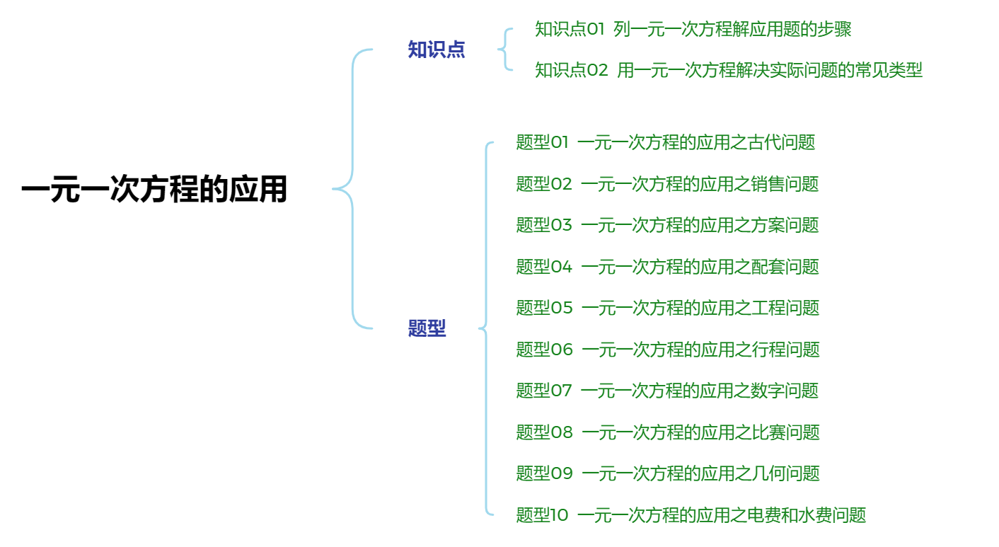

知识点01 列一元一次方程解应用题的步骤
①审：审题，分析题中已知什么，求什么，明确各数量之间关系
②设：设未知数（一般求什么，就设什么为x）
③找：找出能够表示应用题全部意义的一个相等关系
④列：根据这个相等关系列出需要的代数式，进而列出方程
⑤解：解所列出的方程，求出未知数的值
⑥答：检验所求解是否符合题意，写出答案（包括单位名称）
知识点02 用一元一次方程解决实际问题的常见类型
1.行程问题：路程＝速度×时间
2.顺水逆水问题：顺水速度=船速+水速；逆水速度=船速-水速
3.和差倍分问题：增长量＝原有量×增长率
4.利润问题：商品利润＝商品售价－商品进价
5.工程问题：工作量＝工作效率×工作时间，各部分劳动量之和＝总量
6.银行存贷款问题：本息和＝本金+利息，利息＝本金×利率×期数
7.数字问题：多位数的表示方法：例如：
【即学即练1】
1．（2024·安徽合肥·模拟预测）《九章算术》是中国传统数学最重要的著作之一，书中记载：“今有人共买羊，人出五，不足四十五；人出七，不足三，问人数、羊价各几何？”其大意是：今有人合伙买羊，若每人出五钱，还差四十五钱；若每人出七钱，还差三钱．问合伙人数和羊价各是多少？
2．（23-24七年级下·黑龙江哈尔滨·开学考试）在元旦期间，我市某商场从厂家购进了甲．乙两种商品．若购进甲种商品5件，乙种商品4件，共需要800元：已知甲种商品每件的进价比乙种商品每件的进价少20元．
(1)求甲、乙两种商品每件的进价分别是多少元？
(2)该商场从厂家购进了甲．乙两种商品共40件，所用资金恰好为3440元．在销售时，甲种商品的售价为每件100元，乙种商品的售价为每件125元．求这40件的商品全部售出后可获利多少元？（获利=售价-进价）
3．（24-25七年级上·福建厦门·期中）为了鼓励居民节约用电，我省实行阶梯电价政策采取分段计费的方法按月计算每户家庭的电费，每两个月用电量与电费的单价如下表：
档次 | 电量范围 | 电费单价 |
第一档电费 | 340度及以下 |
|
第二档电费 | 341度至520度 |
|
第三档电费 | 520度以上 |
|
 元
元 元
元 元
元比如，若某户两个月用电200度，应缴电费
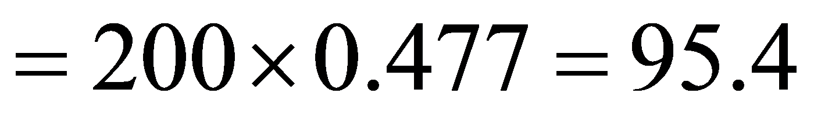
元；若某户两个月用电400度，应缴电费 元；若某户两个月用电600度，应缴电费
元；若某户两个月用电600度，应缴电费 元．
元．(1)小明家1、2月份共用电550度，则小明家这两个月应缴电费多少元？
(2)某用户两个月用电量为 度，用式子表示：
度，用式子表示：
当两个月用电量不超过340度时，应收电费 元；当两个月用电量超过340度但不足520度时，应收电费 元；当两个月用电量超过520度时，应缴电费 元．
(3)小丽家1、2月份应缴电费 元，问小丽家这两个月共用电多少度？
元，问小丽家这两个月共用电多少度？
题型01 一元一次方程的应用之古代问题
【典例1】（2024七年级上·全国·专题练习）《直指算法统宗》中有这样一道题，原文如下：“一百馒头一百僧，大僧三个更无争，小僧三人分一个，大小和尚得几丁？”大意为：有 个和尚分个馒头，如果大和尚
个和尚分个馒头，如果大和尚 人分
人分 个，小和尚人分个，正好分完，大、小和尚各有多少人？请解答上述问题．
个，小和尚人分个，正好分完，大、小和尚各有多少人？请解答上述问题．
【变式1】（2024·安徽六安·模拟预测）《孙子算经》中记载：“今有三人共车，二车空；二人共车，九人步．问人和车各几何？”其大意是：“今有若干人乘车，每人乘一车，最终剩余 辆空车；若每人同乘一车，最终剩下
辆空车；若每人同乘一车，最终剩下 人因无车可乘而步行，问有多少人，多少辆车？”试求有多少人，多少辆车．
人因无车可乘而步行，问有多少人，多少辆车？”试求有多少人，多少辆车．
【变式2】（24-25六年级上·黑龙江绥化·期中）《趣味数学》古希腊数学家丢番图的墓志铭中写到：他一生的六分之一是童年，十二分之一是无忧无虑的少年，又过了一生的七分之一组建幸福的家庭，五年后儿子出生，不料儿子先其父而死，此时儿子只活了父亲岁数的一半，丢番图在悲痛中又度过了四年，最终离开了人世．请你算一算丢番图这一生的年龄是多少岁？
题型02 一元一次方程的应用之销售问题
【典例2】（24-25九年级上·重庆·阶段练习）在2024年巴黎奥运会中，中国奥运健儿们斩获44枚金牌完美收官，其中跳水小将全红婵表现出色，一共收获了2枚金牌，某跳水爱好粉丝团，在女子双人10米跳台比赛前准备给全红婵送绿龟礼物，第一次采购了20个绿龟玩偶和20个绿龟挂件，共花费了1400元，已知玩偶的单价比挂件贵50元．
(1)第一次购买时，绿龟玩偶和绿龟挂件的单价分别是多少元？
(2)在第二场女子10米跳水比赛时，跳水爱好粉丝团又组织了一次购买，第二次购买在第一次购买的基础上，挂件单价优惠了元，玩偶单价优惠了 元，挂件和玩偶的购买费用依然不变，玩偶的个数也不变，但挂件比玩偶多出了一件，请求出的值．
元，挂件和玩偶的购买费用依然不变，玩偶的个数也不变，但挂件比玩偶多出了一件，请求出的值．
【变式1】（24-25七年级上·黑龙江哈尔滨·期中）某超市第一次用
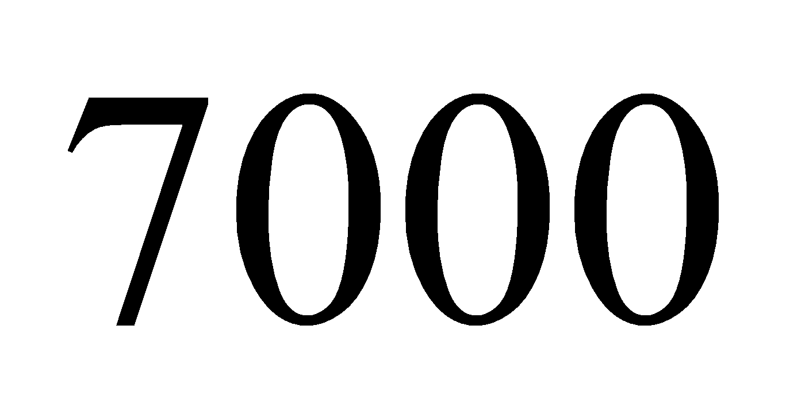
元购进甲、乙两种商品，其中甲商品的件数是乙商品件数的2倍，甲、乙两种商品的进价和售价如表：（注：获利 售价
售价 进价）
进价）甲 | 乙 | |
进价/（元/件） |
|
|
售价/（元/件） |
|
|


(1)该超市将第一次购进的甲、乙两种商品各多少件？
(2)该超市第二次以第一次的进价又购进甲、乙两种商品，其中甲商品的件数不变，乙商品的件数是第一次的3倍．甲商品按原价销售，乙商品降价销售，第二次两种商品都售完以后获得的总利润比第一次获得的总利润多 元，求第二次乙商品的售价是多少？
元，求第二次乙商品的售价是多少？
【变式2】（24-25七年级上·全国·单元测试）某商场经销两种不同的商品．在春节期间，该商场对这两种商品进行如优惠活动：
打折前一次性购物金额 | 不超过500元 | 超过500元但不超过800元 | 超过800元 |
优惠措施 | 按总价打九折 | 按总价打八折 | 其中800元部分打七折，其余部分打六折 |
(1)张明买了实际付款644元的商品，求商品的原价．
(2)在（1）的条件下，第二天张明买了另外一个商品，实际付款608元．如果这两种商品原价之和大于1300元，那么将这两个商品合为一起付款是否更划算？若是，请求出划算的价格．
题型03 一元一次方程的应用之方案问题
【典例3】（24-25七年级上·湖北恩施·阶段练习）某游乐园有如表A，B，C三种购票方式：
种类 | 购票方式 |
A | 一次性使用门票，每张15元 |
B | 年票每张 |
C | 年票每张80元，持票者进入游乐园时需每次再购买6元的门票 |
 元，持票者每次进入游乐园无需再购买门票
元，持票者每次进入游乐园无需再购买门票(1)某游客一年中进入该游乐园共有a次，分别求三种购票方式一年的费用．（用含a的代数式表示）
(2)某游客一年中进入该游乐园共有12次，选择哪种购买方式比较优惠？请通过计算说明．
(3)已知甲、乙、丙三人分别按A，B，C三种方式购票，且他们一年中进入该游乐园的次数相同．一年中，若甲所花的费用与乙所花费用相等，求丙在这一年中进入该游乐园所花的费用．
【变式1】（22-23七年级上·云南玉溪·期末）某服装批发商促销一种裤子和T恤，在促销活动期间，裤子每件定价100元，T恤每件定价50元，并向客户提供两种优惠方案：
方案一：买一件裤子送一件T恤；
方案二：裤子和T恤都按定价的 付款．
付款．
现某客户要购买裤子30件，T恤x件（
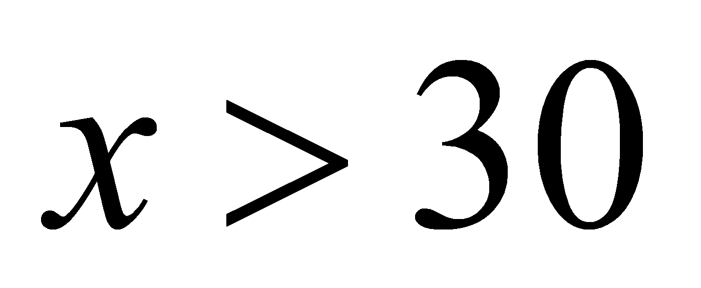
）：(1)按方案一，购买裤子和T恤共需付款 ______（用含x的式子表示）；
(2)计算一下，购买多少件T恤时，两种优惠方案付款一样？
(3)若两种优惠方案可同时使用，当 时，你能给出一种更为省钱的购买方案吗？
时，你能给出一种更为省钱的购买方案吗？
【变式2】（24-25九年级上·广西南宁·阶段练习）随着互联网的普及和城市交通的多样化，人们出行的时间与方式有了更多的选择．某市有出租车、滴滴快车和神州专车三种网约车，收费标准见下表（该市规定网约车行驶的平均速度为40公里/时）．
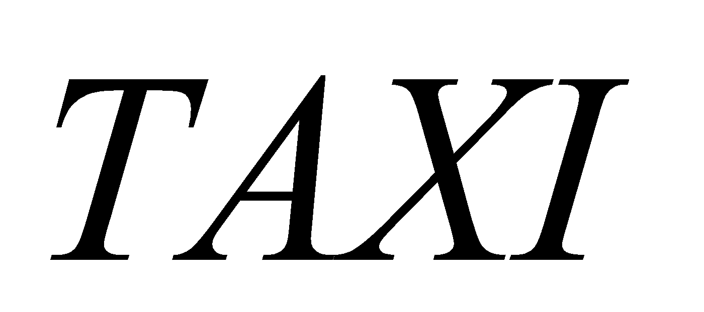 起步价： 元 元超公里费：超过 不足 | 滴滴快车 起步价： 里程费： 时长费： | 神州专车 起步价：10元 里程费： 时长费： |
 元/公里
元/公里 元
元 元/公里
元/公里 元/分钟
元/分钟 元/公里
元/公里 元/分钟
元/分钟问题一：“奋进小组”提出的问题是：如果乘坐这三种网约车的里程数都是10公里，他们发现乘坐出租车最节省钱，费用为 ___________元；
问题二：请解答“质疑小组”提出的以下两个问题，
（1）从甲地到乙地，乘坐出租车比滴滴快车节省13.6元，求甲、乙两地间的里程数；
（2）神州专车和滴滴快车对第一次下单的乘客有如下优惠活动：神州专车收费打八折，另外加5.3元的空车费；滴滴快车超过8公里收费立减6.5元；如果两位顾客都是第一次下单，分别乘坐神州专车、滴滴快车且收费相同，求这两位顾客乘车的里程数．
题型04 一元一次方程的应用之配套问题
【典例4】（24-25七年级上·重庆·阶段练习）甲、乙两个家具厂生产同一规格的单人课桌、椅，由于甲、乙两厂特长不同，甲厂每月（ 天）用
天）用 的时间生产课桌，
的时间生产课桌， 的时间生产课椅，每个月可生产900套课桌椅；乙厂每月用
的时间生产课椅，每个月可生产900套课桌椅；乙厂每月用 的时间生产课桌，
的时间生产课桌， 的时间生产课椅，每个月可生产1500套课桌椅，现在两厂联合生产，经过合理安排，尽量发挥各自特长．现在两厂每月比过去可多生产课桌椅多少套？
的时间生产课椅，每个月可生产1500套课桌椅，现在两厂联合生产，经过合理安排，尽量发挥各自特长．现在两厂每月比过去可多生产课桌椅多少套？
【变式1】（24-25七年级上·黑龙江哈尔滨·阶段练习）某车间有27个工人生产甲、乙两种零件，每3个甲种零件与2个乙种零件配成一套，已知每个工人每天能加工甲种零件12个或乙种零件16个，为使每天生产的两种零件配套，则生产甲、乙零件的工人数各多少人？
【变式2】（22-23七年级上·四川绵阳·期末）糕点店中秋节前要制作一批盒装月饼，每盒装2块大月饼和6块小月饼，制作1块大月饼要用 面粉，1块小月饼要用
面粉，1块小月饼要用 面粉．
面粉．
(1)若制作若干盒月饼共用了 面粉，则制作了多少盒月饼？
面粉，则制作了多少盒月饼？
(2) 公司决定向该糕点厂定制月饼礼盒，该糕点厂给出的团购价格如下：
公司决定向该糕点厂定制月饼礼盒，该糕点厂给出的团购价格如下：
购买的数量（盒） | 不超过60或刚好60 | 超过60 |
每盒单价（元） | 200 | 180 |
若公司决定给45名员工和 名客户
名客户 各订购一盒月饼作为福利，用含的式子表示购买月饼的费用．
各订购一盒月饼作为福利，用含的式子表示购买月饼的费用．
题型05 一元一次方程的应用之工程问题
【典例5】（2024七年级上·全国·专题练习）甲、乙两人共同承包一项工程，甲单独做30天完成，乙单独做20天完成，合同规定15天完成，否则每超过1天罚款1000元．
(1)在规定时间内，甲、乙两人能否完成这项工程？
(2)现两人合作了这项工程的 ，因别处有急事，必须调走1人．调走谁更合适？
，因别处有急事，必须调走1人．调走谁更合适？
【变式1】（24-25七年级上·天津·期中）一项工程，甲队单独做需18天，乙队单独做需24天，如果两队合作8天后，余下的工程再由甲队单独完成．
(1)甲队还需多少天才能完成这项工程？
(2)若甲队每天的酬劳为2000元，乙队每天的酬劳为1500元，问完成这项工程共需支付两队多少钱？
【变式2】（24-25七年级上·黑龙江哈尔滨·期中）哈尔滨亚冬会的某个比赛场馆正在装修，装修后产生的建筑垃圾需要清理．计划租用甲、乙两车队清理建筑垃圾，已知甲车队单独运完需要 天，乙车队单独运完需要
天，乙车队单独运完需要 天．乙车队先运了
天．乙车队先运了 天，然后甲、乙两车队合作运完剩下的垃圾．
天，然后甲、乙两车队合作运完剩下的垃圾．
(1)甲、乙两车队合作还需要多少天运完垃圾？
(2)已知甲车队每天的租金 元，比乙车队少元，运完垃圾后共需支付甲、乙两车队租金多少元？
元，比乙车队少元，运完垃圾后共需支付甲、乙两车队租金多少元？
题型06 一元一次方程的应用之行程问题
【典例6】（24-25七年级上·辽宁沈阳·阶段练习）小明、小杰两人在400米的环形赛道上练习跑步，小明每分钟跑280米，小杰每分钟跑220米．若小明、小杰两人同时同地反向出发，那么出发几分钟后，小明，小杰第一次相遇？
【变式1】（2024七年级上·全国·专题练习）甲站和乙站相距 ，一列慢车从甲站开出，速度为
，一列慢车从甲站开出，速度为 ，一列快车从乙站开出，速度为
，一列快车从乙站开出，速度为 ．
．
(1)若两车相向而行，慢车先开 ，快车开出多少小时后两车相遇？
，快车开出多少小时后两车相遇？
(2)若两车同时开出，相背而行，多少小时后两车相距
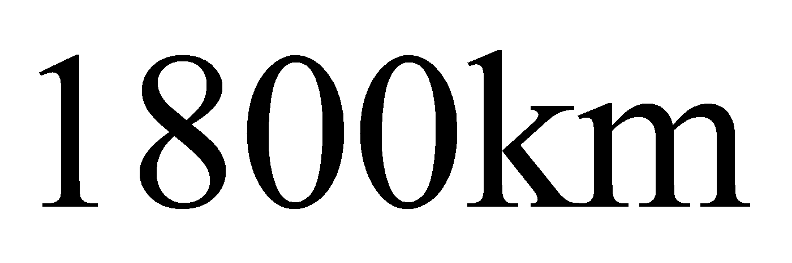
？(3)若两车同时开出，快车在慢车后面同向而行，多少小时后两车相距 （快车在慢车的后面）？
（快车在慢车的后面）？
【变式2】（24-25七年级上·广东惠州·期中）已知在数轴上点A表示的数为8，B在A点左侧，且A，B两点间的距离为14．动点P从点A出发，以每秒4个单位长度的速度沿数轴向左匀速运动，点Q从B点向右运动，速度为每秒2个单位，PQ同时出发，设运动时间为 秒．
秒．
(1)数轴上点B表示的数是______；当点P运动到 的中点时，它所表示的数是______．
的中点时，它所表示的数是______．
(2)动点Q从点B出发，以每秒2个单位长度的速度沿数轴向右匀速运动，求：
①当点P和点Q运动多少秒时，点P和点Q第一次相遇？
②当点P运动多少秒时，点P与点Q间的距离为6个单位长度？
题型07 一元一次方程的应用之数字问题
【典例7】（23-24七年级上·江苏苏州·期中）一个两位数，十位数字是个位数字的 2 倍，将两个数对调后得到的新两位数与原两位数的和是99，原两位数是 ．
【变式1】（24-25七年级上·广东广州·期中）将奇数至 按照顺序排成下表：
按照顺序排成下表：
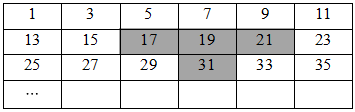
记 表示第
表示第 行第
行第 个数，如
个数，如
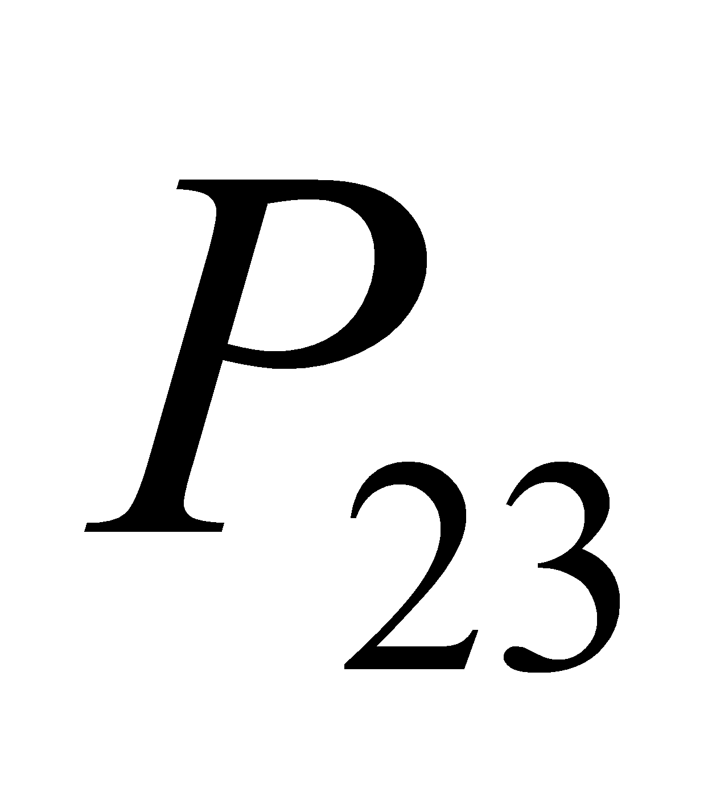
表示第行第个数是 ．
．(1) ；
；
(2)将表格中的 个阴影格子看成一个整体并平移，所覆盖的个数之和能否等于．若能，求出个数中的最大数；若不能，请说明理由；
个阴影格子看成一个整体并平移，所覆盖的个数之和能否等于．若能，求出个数中的最大数；若不能，请说明理由；
(3)用、的式子表示 ；
；
(4)若 ，求、的值．
，求、的值．
【变式2】（2024七年级上·全国·专题练习）如图，阶梯图的每个台阶上都标着一个数，从下到上的第1个至第4个台阶上依次标着 ，
， ，1，9，且任意相邻四个台阶上的数的和都相等．
，1，9，且任意相邻四个台阶上的数的和都相等．
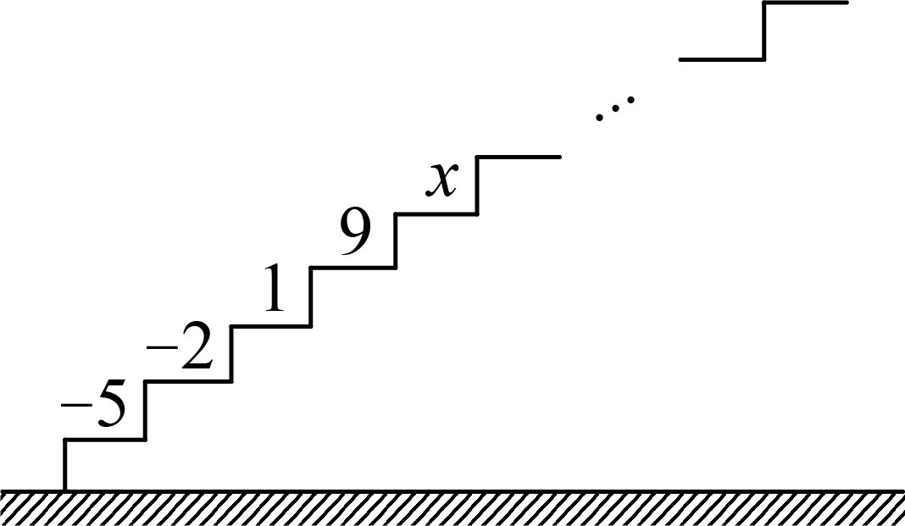
(1)前4个台阶上的数的和是多少？
(2)第5个台阶上的数x是多少？
(3)试用含k（k为正整数）的式子表示出数“1”所在的台阶数．
题型08 一元一次方程的应用之比赛问题
【典例8】（24-25七年级上·黑龙江哈尔滨·期中）“办学互助”是萧红中学办学特色之一．七年18班的第一组6名同学，自行组织知识竞赛，共设20道选择题，各题分值相同，每题必答，下表记录的是5名同学的得分情况：
参赛者 | A | B | C | D | E |
答对题数 | 20 | 19 | 18 | 14 | 10 |
答错题数 | 0 | 1 | 2 | 6 | 10 |
得分 | 100 | 94 | 88 | 64 | 40 |
(1)由表格知，答对一题得________分，答错一题得________分；
(2)第6名同学F得了82分，请你帮他算一算，答对了几道题？
【变式1】（2024七年级上·全国·专题练习）在2022年女足亚洲杯决赛中，中国女足以 逆转韩国女足，时隔16年再夺亚洲杯冠军！某学校掀起一股足球热，举行了班级联赛，九（1）班开局11场保持不败，共积25分，按照比赛规则，胜一场积3分，平一场积1分，负一场积0分，求该班获胜的场数．
逆转韩国女足，时隔16年再夺亚洲杯冠军！某学校掀起一股足球热，举行了班级联赛，九（1）班开局11场保持不败，共积25分，按照比赛规则，胜一场积3分，平一场积1分，负一场积0分，求该班获胜的场数．
【变式2】（23-24六年级上·山东淄博·期末）某校初一（3）班组织生活小常识竞赛，共设20道选择题，各题分值相同，每题必答．下表记录了其中4个参赛者的得分情况．
参赛者 | 答对题数 | 答错题数 | 得分 |
A | 20 | 0 | 100 |
B | 18 | 2 | 88 |
C | 64 | ||
D | 10 | 10 | 40 |
(1)参赛者E说他错了10个题，得分为50分，请你判断可能吗？并说明理由：
(2)参赛者C答对了几道题？请你通过计算说明．
题型09 一元一次方程的应用之几何问题
【典例9】（24-25八年级上·湖南永州·阶段练习）如图，在 中，
中，
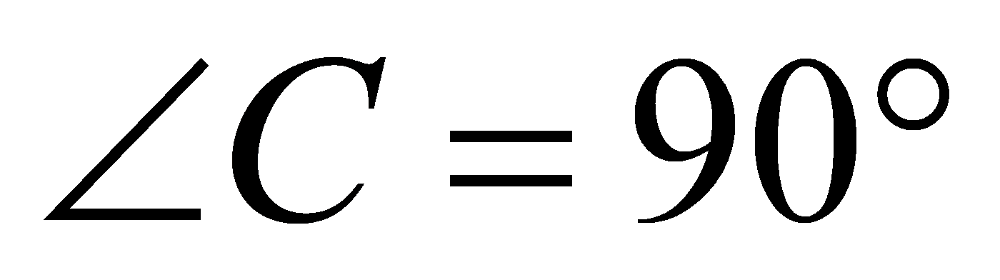
，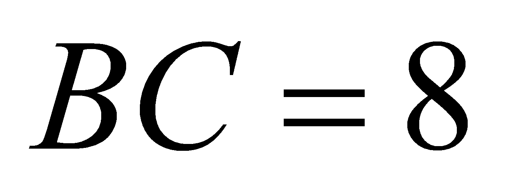
， ，点
，点 是
是 的中点，动点
的中点，动点 从点出发，以每秒个单位的速度沿
从点出发，以每秒个单位的速度沿 运动．若设点运动的时间是
运动．若设点运动的时间是 ，若
，若 的面积等于
的面积等于 ．那么
．那么 值是（ ）
值是（ ）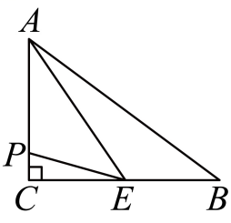
A． B． C．或 D．不存在
C．或 D．不存在
【变式1】（24-25七年级上·浙江宁波·阶段练习）如图，8张正方形泡沫板拼成一个长方形展板，其中最小的两个正方形边长均为1米，则长方形展板的面积是 平方米．
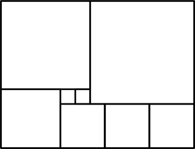
【变式2】（24-25七年级上·吉林长春·期中）如图1，在长方形 中，
中， ．点P从点B出发，以
．点P从点B出发，以 的速度沿方向运动到点C停止，点Q从点C出发，以
的速度沿方向运动到点C停止，点Q从点C出发，以 的速度沿
的速度沿 方向运动到点C停止，连接、
方向运动到点C停止，连接、 ；若P、Q两点同时出发，设点P的运动时间为t秒
；若P、Q两点同时出发，设点P的运动时间为t秒 ，
， 的面积为
的面积为 ．
．
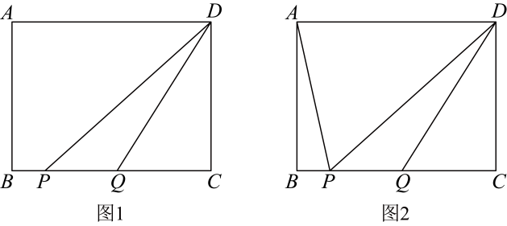
(1)当 时，
时，
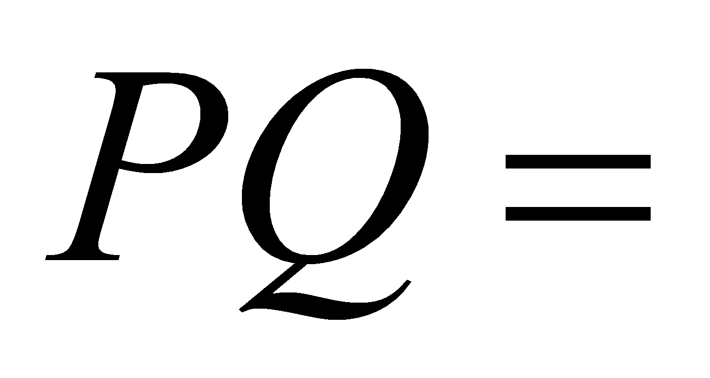
_________；当 时，_________．
时，_________．(2)当点P和点Q相遇时，求t的值．
(3)当 时，用含t的代数式表示S．
时，用含t的代数式表示S．
(4)如图2，在点P和点Q不重合的情况下，连接 ，当以A、P、Q、D为顶点的四边形的面积是长方形的面积的时，直接写出t的值．
，当以A、P、Q、D为顶点的四边形的面积是长方形的面积的时，直接写出t的值．
题型10 一元一次方程的应用之电费和水费问题
【典例10】（24-25七年级上·全国·期中）某市出租车收费标准是：起步价10元，可乘 ；到
；到 时，超过的部分按
时，超过的部分按 元
元
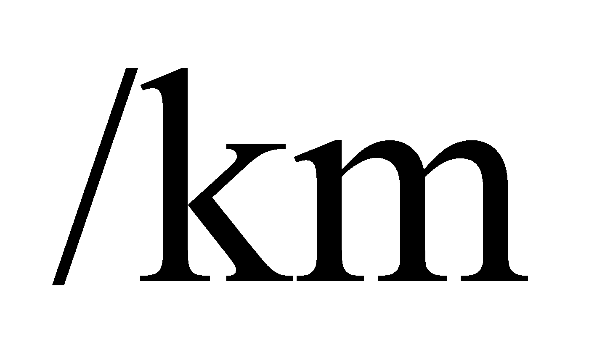
的标准收费；超过时，超过的部分按2元的标准收费．（不足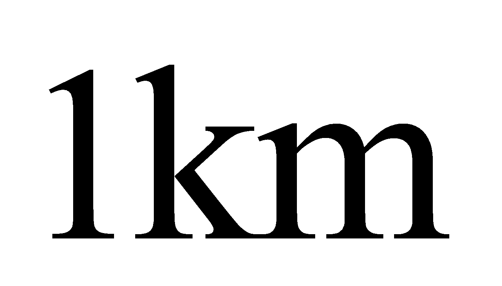
的按计算）(1)若某人乘坐了 的路程，则他应支付的费用为 ；
的路程，则他应支付的费用为 ；
(2)若某人乘坐了x（ 的整数）千米的路程，则他应支付的费用为 ；
的整数）千米的路程，则他应支付的费用为 ；
(3)若某人乘坐出租车共花了15元，问出租车行驶了多少公里？
【变式1】（24-25七年级上·陕西榆林·期中）我市某小区居民使用自来水2024年标准缴费如下（水费按月缴纳）：
用户月用水量 | 单价 |
不超过12 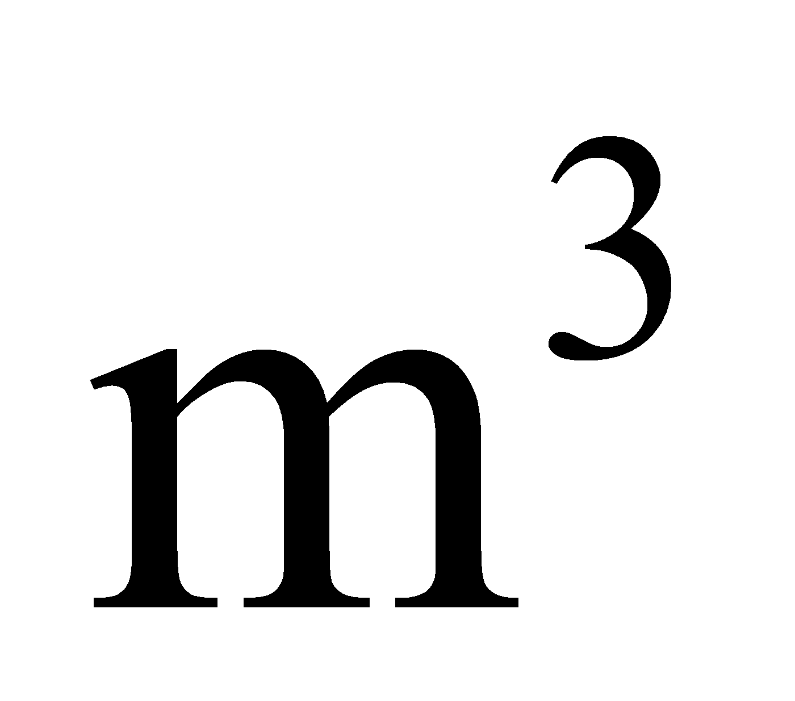 的部分 | a元/ |
超过12但不超过20的部分 |
|
超过20的部分 |
|
 元/
元/ 元/
元/(1)某户4月份用了13的水，求该户4月份应缴纳的水费；（用含a的式子表示）
(2)设某户月用水量为n，当
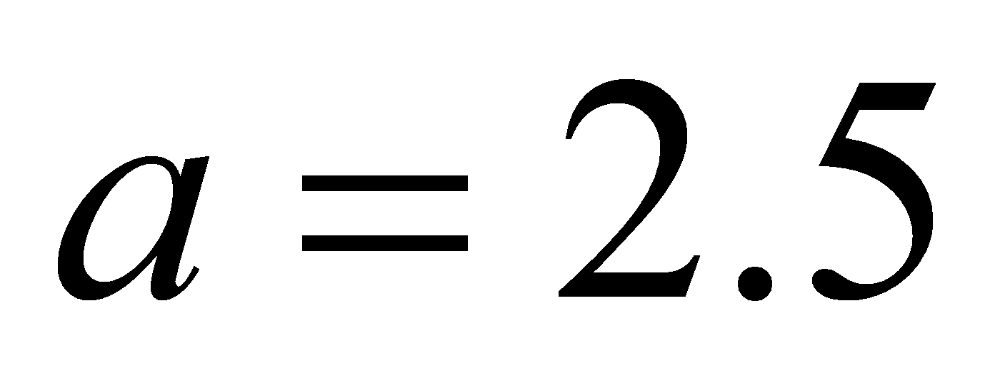
， 时，该户应缴纳的水费为多少元？（用含n的式子表示）
时，该户应缴纳的水费为多少元？（用含n的式子表示）(3)当 时，甲、乙两户一个月共用水32，已知甲户缴纳的水费超过了24元，设甲户这个月用水x，试求甲，乙两户一个月共缴纳的水费．（可用含x的式子表示）
时，甲、乙两户一个月共用水32，已知甲户缴纳的水费超过了24元，设甲户这个月用水x，试求甲，乙两户一个月共缴纳的水费．（可用含x的式子表示）
【变式2】（23-24七年级上·江苏盐城·阶段练习）为响应国家节能减排的号召，鼓励人们节约用电，保护能源，某市实施用电“阶梯价格”收费制度．收费标准如表：
居民每月用电量 | 单价（元 |
不超过50度的部分 |
|
超过50度但不超过200度的部分 |
|
超过200度的部分 |
|
 度）
度）

已知小智家上半年的用电情况如表（以200度为标准，超出200度记为正、低于200度记为负）
一月份 | 二月份 | 三月份 | 四月份 | 五月份 | 六月份 |
|
|
|
|
|
|


根据上述数据，解答下列问题：
(1)小智家用电量最多的是____月份，该月份应交纳电费_____元；
(2)若小智家七月份应交纳的电费 元，则他家七月份的用电量是多少？
元，则他家七月份的用电量是多少？
一、单选题
1．（24-25七年级上·黑龙江哈尔滨·期中）数学竞赛共有10道题，每答对一道题得5分，不答或答错一道题倒扣3分，要得到34分，必须答对的题数是（ ）
A．5道 B．6道 C．7道 D．8道
2．（24-25七年级上·黑龙江哈尔滨·阶段练习）甲乙共同登同一座山，甲每分登高10米，并且先出发30分钟，乙每分登高15米，两人同时登上山顶，则山高是（ ）米
A．900 B．1000 C．800 D．600
3．（24-25九年级上·黑龙江哈尔滨·阶段练习）某车间有45名工人，生产某种由一个螺栓套两个螺母的产品，每人每天生产螺母16个或螺栓22个，若分配 名工人生产螺栓，其他工人生产螺母，恰好使每天生产的螺栓和螺母配套，则下面所列方程中正确的是（ ）
名工人生产螺栓，其他工人生产螺母，恰好使每天生产的螺栓和螺母配套，则下面所列方程中正确的是（ ）
A． B．
B．
C． D．
D．
4．（24-25七年级上·辽宁抚顺·期中）如图，老师在探究“幻方”的数学课上稍加创新改成了“幻圆”游戏，让学生们感悟到我国传统数学文化的魅力．一个小组尝试将数字 ，2，
，2，
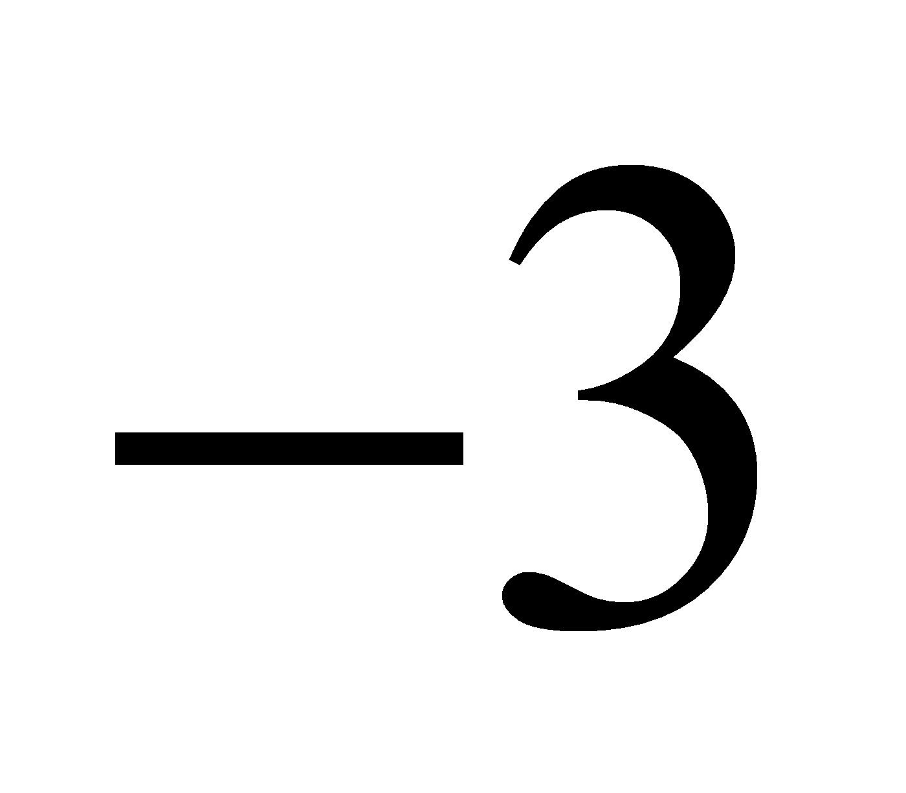
，4， ，6，
，6， ，8这8个数分别填入圆圈内，使横、竖以及内外两圆上的数字之和都相等，老师已经帮助同学们完成了部分数字填入圆圈中，则请爱思考的你计算出
，8这8个数分别填入圆圈内，使横、竖以及内外两圆上的数字之和都相等，老师已经帮助同学们完成了部分数字填入圆圈中，则请爱思考的你计算出 的值为（ ）
的值为（ ）
A． 或 B．
或 B． 或1 C．或
或1 C．或 D．1或
D．1或
二、填空题
5．（22-23七年级上·江西抚州·阶段练习）一件服装的标价为400元，打八折销售后可获利60元，则该件服装的成本价是 元．
6．（2024七年级上·全国·专题练习）某车间每天需生产50个零件，才能在规定时间内完成一批任务，实际上该车间每天比计划多生产了6个零件，结果比规定的时间提前3天完成且超额生产了120个零件．若设该车间要完成的零件任务为x个，则可列方程为 ．
7．（21-22九年级下·上海·自主招生）某城市按以下规定收取煤气：（1）每月所用煤气按整立方米数计算：（2）若每月用煤气不超过 立方米，按每立方米0.8元收费；若超过立方米，超过部分按每立方米
立方米，按每立方米0.8元收费；若超过立方米，超过部分按每立方米
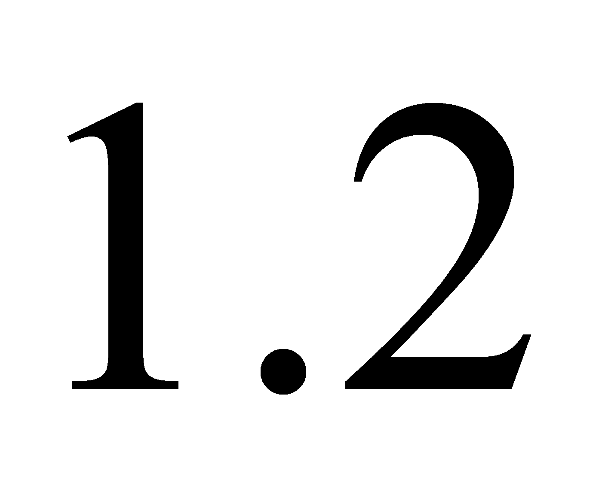
元收费．已知某户人家某月的煤气费平均每立方米 元，则这户人家需要交煤气费 元．
元，则这户人家需要交煤气费 元．8．（24-25七年级上·江苏连云港·阶段练习）在明代的《算法统宗》一书中将用格子的方法计算两个数相乘称作“铺地锦”，如图1，计算82×34，将乘数82记入上行，乘数34记入右行，然后用82的每位数字乘34的每位数字，将结果记入相应的格子中，最后按斜行加起来，既得2788． 如图2，用“铺地锦”的方法表示两个两位数相乘，则a的数值为 ．
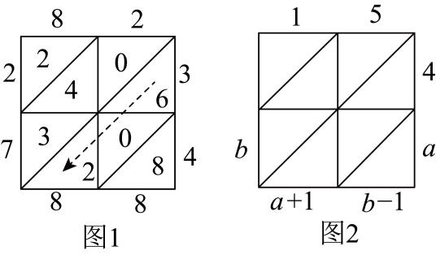
三、解答题
9．（23-24六年级下·上海嘉定·期末）一名篮球队员在一场比赛中投篮与罚篮共计15投10中得20分，投进两分球的个数是投进三分球个数的3倍，问这名篮球队员投中几个三分球？几个两分球？罚中几个球？（每罚中1球得1分）
10．（2024七年级上·全国·专题练习）一艘快艇从A码头到B码头顺流行驶，同时一艘游船从B码头出发顺流而下．已知，A、B两码头相距140千米，快艇在静水中的平均速度为67千米/小时，游船在静水中的平均速度为27千米/小时，水流速度为3千米/小时．
(1)请计算两船出发航行30分钟时相距多少千米？
(2)如果快艇到达B码头后立即返回，试求两船在航行过程中需航行多少时间恰好相距100千米？
11．（21-22六年级上·黑龙江哈尔滨·期末）实验室里有一个圆柱形空水槽，底面直径为
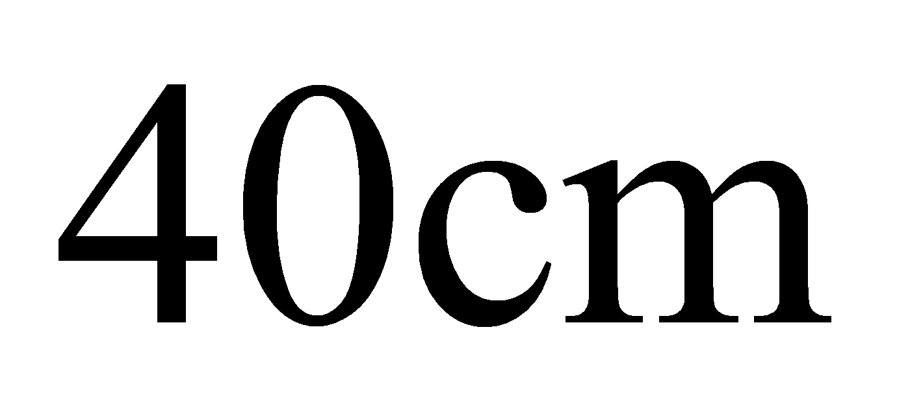
，高为 ．
．(1)将底面半径为，高度为
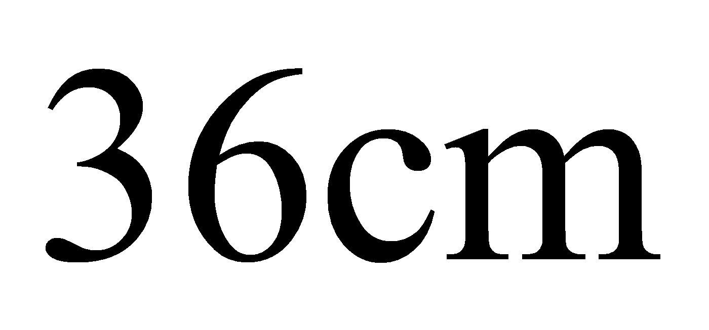
的圆锥形容器装满水全部倒入圆柱形水槽内，此时水槽内水的高度为多少？(2)在（1）的条件下，将一个圆柱形铁锭放入水槽内，全部浸入水面以下，水面上升了 ，如果这个圆柱形铁锭的底面半径为
，如果这个圆柱形铁锭的底面半径为 ，那么这个圆柱形铁锭的高是多少？
，那么这个圆柱形铁锭的高是多少？
(3)在（1）的条件下，如果将一个高为，底面半径为的圆柱形铁锭竖直放入水槽内，那么水面上升了多少？
12．（24-25六年级上·黑龙江哈尔滨·期中）在清冰雪工作中，某驻哈武警部队出动兵力600人参加三条街路的清冰雪劳动，其中A街路清冰雪的人数占此次出动兵力总人数的，余下的人参加B街路和C街路的清冰雪劳动，并且参加B街路清冰雪的人数是参加C街路的清冰雪人数的 ．
．
(1)求参加A街路清冰雪劳动共有多少人？
(2)求参加B街路和C街路的清冰雪劳动各有多少人？
(3)在A街路清冰雪过程中，因有其它工作需要，调走了此处 的兵力后，附近的居民主动参加劳动，此时在A街路清冰雪的武警官兵人数比居民人数的3倍少6人，求参加清冰雪劳动的居民有多少人？
的兵力后，附近的居民主动参加劳动，此时在A街路清冰雪的武警官兵人数比居民人数的3倍少6人，求参加清冰雪劳动的居民有多少人？
13．（2024七年级上·全国·专题练习）某开发公司生产若干件某种新产品，需要精加工后才能投放市场，现有甲、乙两个工厂都想加工这批产品．已知甲、乙两个工厂每天分别能加工这种产品16件和24件，甲单独加工这批产品比乙单独加工这批产品要多用20天，且若由甲单独做，公司需付甲每天的加工费用80元；若由乙单独做，公司需付乙每天的加工费用120元．
(1)设甲单独加工这批新产品要用x天，则乙单独加工这批新产品要用_______天；
(2)在（1）的条件下，求这批新产品的件数；
(3)若公司董事会制定了如下方案：可以由每个工厂单独完成，也可以由两个工厂同时合作完成，但在加工过程中，公司需派一名工程师到工厂进行技术指导（若两个工厂同时合作，只需派一名工程师到工厂指导），并由公司为其提供每天10元的午餐补助．请你帮助公司选择一种既省时又省钱的加工方案，并通过计算说明理由．
14．（24-25七年级上·江西九江·期中）追本溯源
将连续的奇数1，3，5，7，…，排成如下图的数表，用图中所示的十字框可任意框出5个数．
【探究规律】
（1）设十字框中间的奇数为 ，则框中右边的奇数可以表示为______；
，则框中右边的奇数可以表示为______；
（2）能被十字框框中的这五个奇数之和一定是某自然数 的奇数倍，
的奇数倍，
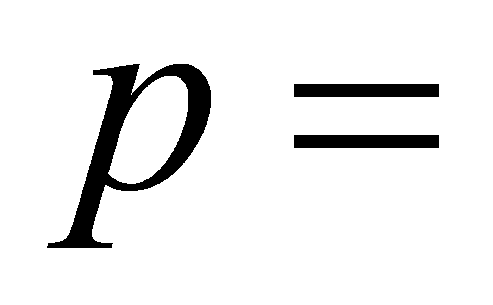
______；（3）数表第 行第1列是数字______（用含的代数式表示）；
行第1列是数字______（用含的代数式表示）；
【运用规律】
（4）已知被十字框框中的五个奇数之和为2025，则十字框中间的奇数是______；这个奇数落在第______行第______列；
（5）被十字框框中的五个奇数之和可能是545吗？说说你的理由．
15．（24-25七年级上·浙江杭州·期中）每年12月份陶山甘蔗进入销售旺季．某水果店购进陶山甘蔗60箱，每箱成本8元，标价20元．在售出一部分后，准备进行优惠促销，小美和小乐分别设计了以下方案：

促销方案 | |
小美 | 每箱15元 |
小乐 | 每箱打7折 |
(1)按小乐的方案，若促销前卖出20箱，则全部售出后可以获得多少利润？
(2)按小美的方案，设促销前卖了x箱，用含x的代数式表示售完陶山甘蔗所获得利润．
(3)按原价售出30箱后，该水果店决定进行组合促销；剩下甘蔗3箱打包成一组，打折出售，每组售出时还赠送1个小礼品．为了使总利润为600元，请你在给出的表格中设计一个销售方案：
标价 | 折扣 | 现价 | 礼品成本 | |
甘蔗 | 20元／箱 | 折 | 元／箱 | 6元／个 |
16．（24-25七年级上·江苏盐城·期中）为了加强公民的节水意识，合理利用水资源，某市采用价格调控的手段达到节水的目的，该市自来水收费的收费标准如下表：
收费标准（注：水费按月份结算） | |
每月用水量 | 单价（元/立方米） |
不超出6立方米的部分 | 2 |
超出6立方米不超出10立方米的部分 | 4 |
超出 | 8 |
例如：某户居民1月份用水8立方米，应收水费为
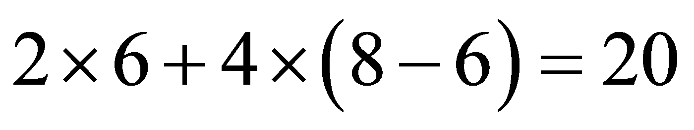
（元）请根据上表的内容解答下列问题：
(1)若某户居民2月份用水7立方米，则应收水费______元；
(2)若某户居民4月份用水立方米（其中
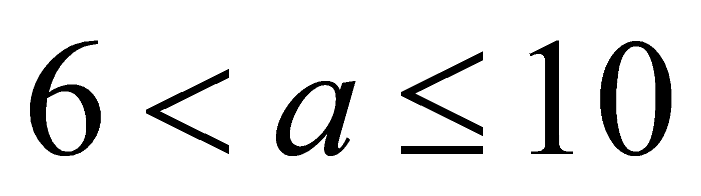
），请用含的代数式表示应收水费______元（结果需化简）(3)若某户居民3月份交水费 元，则3月份用水量为______立方米；
元，则3月份用水量为______立方米；
(4)若某户居民
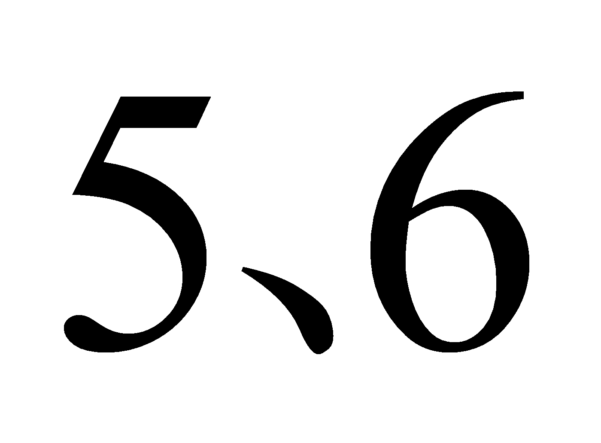
两个月共用水 立方米（6月份用水量超过了
立方米（6月份用水量超过了 立方米），设5月份用水立方米，请用含的代数式表示该户居民两个月共交水费多少元？
立方米），设5月份用水立方米，请用含的代数式表示该户居民两个月共交水费多少元？